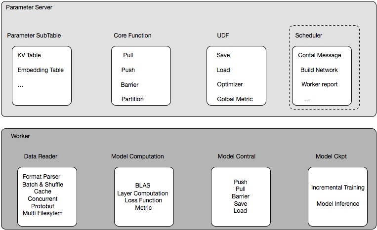

机器学习工程实践
过去半年，我们团队在机器学习平台上做过一些工作，因为最近看到几篇关于机器学习算法与工程方面的的文章，觉得十分有道理，萌发了总结一下这块的一些工作的念头，我最近工作主要分为两块：1，机器学习框架的研发、机器学习平台的搭建；2，基础NLP能力的业务支持。本篇文章会总结下在机器学习框架这部分系统工作上的一些工作，主要也分为两部分：1，经典框架的支持；2，自研框架的工作；

经典框架的支持
这里经典框架其实就是TensorFlow，目前TensorFlow在我司场景上主要集中在两部分场景：
- 搜索、推荐、广告等比较传统业务场景，提供包括召回、粗排、精排等核心流程的算法支持；
- 新兴业务如直播、社交等业务基础的算法能力的支持，构建内容生态， 如各业务内容审核、曲库、歌单、直播体系建设等方面;
具体一个case
算法业务有一个场景，根据用户过去session内的若干次（限制为定长）的访问记录，预测下一个访问内容，业务同学设计了一个DNN来召回这部分内容，然后，在精排阶段去排序。但是问题在于召回的整体候选集特别大，大概为30万， 因此，这个DNN模型就有了如下的结构：

初看，没有任何问题，设计一个多层mlp，来训练召回模型，且保证输入限制为定长K，通过过去K次浏览记录来召回下一次可能的内容， 很合理，且在业务上效果挺不错的。从算法业务同学的视角里，这完全没有任何问题，相信很多小伙伴在业务初期都会有类似的尝试，但是问题是当候选集为30万大小，或者更大时，想想这时候会发生什么？（感谢之前在腾讯手机qq浏览器的经验，yuhao做歧义消解的时候讨论过这个问题）
每一轮的迭代，必须有两个过程forward、backward， forward主要逻辑是基于预测值，backward主要逻辑是根据预测值和对应标签信息，然后更新梯度信息，如此大的输出节点数，每一次forward会计算30万的softmax然后计算loss，通过bp更新梯度，这其中的耗时可想而知，，相信很多小伙伴看到这里会突然想到word2vec针对这块的优化：Negative Sampling和Hierarchical Softmax， 专门用来解决输出维度过大的情况；google也发表了On Using Very Large Target Vocabulary for Neural Machine Translation，用于在Very Large Target Vocabulary部分的loss的计算，TensorFlow官方也支持https://www.tensorflow.org/api_docs/python/tf/nn/sampled_softmax_loss，改造sampled_softmax_loss之后，速度提升将近30%。
另外在支持业务的时候，还发现一个很有意思的东西，业务同学因为要在训练过程中看到一些预测的结果是否符合预期， 因此在每次sess.run()的时候都塞进去predict的op。但是呢，训练过程本身又是使用的softmax_cross_entropy，这就造成了一次sess.run()其实跑了两轮softmax，之前没有考虑这样的细节，在某天和业务同学一起优化时，猛然看到，修改后，速度直接提升了一倍，也就是说上述所有的计算其实都是在softmax相关的计算，其实真实的模型的更新可能95%以上的计算都在softmax，加上本身使用TensorFlow灵活性确实够大，predict、train又计算了两次softmax，耗时可想而知。
基于上述两个点优化之后，速度整体提升明显，但是回到算法模块的设计上，DNN在如此大的候选集上真的合适吗，在我看来，其实设计是可以更好的，微软在2013年的的文章有提到DSSM的工作https://www.microsoft.com/en-us/research/wp-content/uploads/2016/02/cikm2013_DSSM_fullversion.pdf， 后来业界优化dssm支持lstm、cnn子模块，用于推荐系统的召回，相信会是更好的方法，不存在输出空间太大的问题。
上述类似的问题应该出现在很多团队中，尤其是在新兴业务中的快速落地，无可厚非，设计了一套业务数据十分好看的模型，除了耗时多一些、内存多了一些，但是呢，对工程同学呢，这个是无法忍受的。不需要的地方，一点点的算力、一点点的比特的浪费都不能让，这是工程同学、尤其是机器学习工程同学基本的坚持。
hdfs小文件读取的优化
另外一块关于TensorFlow的优化是读取hdfs数据时，小文件的影响，场景是这样的，业务同学收集好数据之后，转为tfrecord，存到hdfs，然后本地通过TFRecordDataset去读取hdfs文件，速度很慢，通过一些工具分析，主要耗时集中在数据拉取过程中，但是其他业务场景下也不会有问题，后来拿到数据看了下，因为复用了部分代码，在spark上转tfrecord的时候默认partition为5000，而本身该场景数据量比较小，分割为5000后，每个文件特别小，而TensorFlow在读取tfrecord时，遇到小文件时，效率会特别低，其实不仅仅是在hdfs上，在ceph上也是，笔者之前也遇到小文件造成的数据读取的耗时严重影响模型训练的问题。
分布式方案如何选择
当单机无法满足性能之后，自然而然选择了分布式方案，那么分布式方案如何选择呢，业界有两套比较成熟的方案：
- 基于parameter server的分布式方案，能够有效支持模型并行、数据并行；
- 基于ring allreduce的分布式方案，能够有效支持数据并行；
两者之间差别在哪儿呢 ？
回答这个问题之前，我们先做一个算术题：
若一个场景，每200个batch耗时21秒左右，即一个batch约为0.1s，假设模型传参时间为一半，整体模型大小约为100M，如果仅做数据并行，也就是说每0.05s需要将整个模型通过网络传到另一台机器上，也就是要奖金2GB/s的带宽，换算成远远超过现在很多10Gb网卡的性能，而大家会存疑了，为啥每个batch 计算时间为啥仅有0.1s呢，这个可能吗，其实在推荐、广告这类场景下，这种情况极有可能，在推荐、广告这类场景下模型的特点在于embedding维度极大，但是本身消耗的算力比较小，耗时也很小，embedding仅仅是lookup 然后到较小维度的embedding向量，剩余的参数更新量极小。
所以要保证此类模型的并行效率，ring allreduce这类分布式方案，并不可行，网络必将成为瓶颈，那么如何选择呢？ parameter server目前看来是一套比较好的方案，模型并行，模型分布能够有效利用多个worker的网卡带宽，达到较高的加速效率。
而ring allreduce适合那些 model_size/batch耗时 较小的场景，比如cv场景下cnn model，其加速比几乎可以达到线性：


当然也有很多手段来在推荐场景上也使用ring allreduce，比如并不是每个batch都更新所有的梯度的信息，可以选择性的去传输部分梯度，通过合理的策略选择，也能达到很好的加速效率，这里就不详细展开了。
线上模型部署优化
模型部署这块的工作，因为涉及到线上，在我们看来更加重要。由于业务系统大部分基于Java构建，而机器学习框架本身大部分采用c/c++实现，因此我们采用jni的方式来打通java业务系统到c++模型的调用，将包括spark lgb、tensorflow还有我们自研的框架，进行封装，业务只需要指定模型引擎、写好模型出入处理，即可快速上线，这块后续会有团队小伙专门文章介绍，这里只描述一点可能算不上优化的优化，就是在TensorFlow框架中引入SIMD的支持，起先由于缺少这块的经验，并没有想到SIMD对于性能的提升，但业务RT过高时，发现原先TensorFlow CPU的线上的编译按TensorFlow默认教程，少了AVX、SSE的支持， 在引入AVX、SSE之后,线上性能提升明显，A场景从40ms降到了20ms，B场景从70+ms降到了40ms，读者里面有部署没有引入SIMD的，可以快速尝试下，很香，命令如下：
bazel build -c opt --copt=-msse3 --copt=-msse4.1 --copt=-msse4.2 --copt=-mavx --copt=-mavx2 --copt=-mfma //tensorflow/tools/pip_package:build_pip_package
自研框架

如上图，是自研框架的一个逻辑抽象图，整体框架分为三个角色：scheduler、Server、Worker，通过计算与存储分离，合理编排任务，达到高性能的分布式机器学习框架，这里不详细描述这块的设计，后续感兴趣会有专门的文章来描述,这里仅讨论下在自研框架上的几道坎。
自研框架路上的几道坎
部署工作
项目之初，因为基于Parameter Server的自研框架，不像Spark、Hadoop有现成的作业提交系统，团队开发了一套简单的实验工具，用于支持框架的开发：具体是基于docker作为环境的配置以及隔离工具， 自研deploy工具，发布多节点训练任务，镜像内打通线上大数据环境，可以任务实验环境发布后直接拉取节点来训练模型，现阶段已有较好的任务发布、资源调度系统，相信随着后续迭代会更加的合理以及完全。
其实这个就是一个鸡生蛋、蛋生鸡的问题，有的人认为要自研框架，需要先考虑支持工作，如何提交、如何监控， 连部署工具、任务调度都没有，怎么做框架？这是个特别好的问题，基建无法满足的情况应该多多少少会出现在很多团队上，怎么办？基建无法满足，开发就没办法进行下去吗？当然不是，作为工程师，完全可以开发一个极简版本，支持你的项目开发，记住这时你的目的是框架开发而非业务支持，框架开发过程中自然会找到解决方案，以前老大经常和我们提项目之初不能过度设计，我觉得还要加上一条，项目之初要抓住关键需求，然后来扣，一个复杂的系统永远不是完美的，也不是一个团队可以支持的，要联合可以联合的团队一起成长、一起攻克。
资源瓶颈
不管何时，资源的瓶颈或许说资源的限制一定会存在，对于一个好的系统一定是不断磨合不同流程、不同模块之间的性能来达到的,自研框架过程中，我们学习到一些经验：
定制数据处理逻辑
分布式机器学习框架，尤其是大规模离散场景下，单batch的样本稀疏程度十分大， 有值特征通常不到万分之一，在一轮迭代中仅仅只更新很小一部分参数，如下图
如图中粉红圆圈

原则上，但数据reader去解析数据文件中的数据时，理论上一次遍历即可拿到所有数据，此处考虑到计算能力，采用生产-消费者模式，配置好合适的cache，用来保存待消费的数据序列。放入cache的数据文件分片单位，如支持4个part，即表明cache内数据条数为4*part内条数据，读取文件数据时，应用format_parser来解释训练数据格式，然后进入cache， cache内部分进行shuffle，切分batch，切分batch过程中会计算每一个batch的nnz、key_set，用于后面分配计算空间以及向server拉取参数，参数拉取完成够， 每一个batch喂给计算模块去计算，shuffle batch on the fly。
可能各位大佬看到这里觉得不太高效，为什么是分块的载入cache，为啥不直接使用流式处理呢 ？ 流式处理是不是会更高效，因为这里考虑到shuffle这块的逻辑，流式上的shuffle设计会十分复杂，这里其实我们也考虑过，比如在cache上配置一个计时器，定时进行cache内数据的shuffle，理论上可以增加一定的shuffle逻辑，但其实也无法严格保证， 当然之前我们也考虑过直接在前面读取数据时，做全局的shuffle，类似于现在图像的读取逻辑，比如类似于lmdb的存储结构，其实质在于每个样本配置一个指针用于指定数据内存块，但是在推荐场景下，一般单个样本1k-1.5k大小，样本量十分大， 如果使用lmdb这套逻辑，理论上我可以通过指针序列进行全局的shuffle，快速定位到指针位置来取样本数据， 但是如此多的指针，本身的内存占用就变得很大了，不像图像，单个指针相对整个图像内存来说几乎忽略不计，我们在尝试之后，发现样本空间变得十分巨大， 拉取数据的增长远远超过我们的鳄鱼漆， 而在推荐场景下这个是我们没有采用的，而是采用分数据块读取，然后local shuffle的逻辑。
拒绝数据拷贝，减少内存压力
起初框架开发时，尽快我们考虑到性能问题，但多多稍稍还是没注意很多内存空间的拷贝以及不及时释放的问题，这块在单worker，或者worker数量较少的情况下，影响可忽略，但是当我们要将一台机器压到极致性能时，这块我们重新梳理了下，通过更改逻辑以及使用move操作去除 parser 等函数中不必要的数据拷（此处没有严格对比），预估能提升将近1/10的性能，尤其是训练样本数据块的拷贝，占用过多内存。
磁盘IO瓶颈
我们没有想到磁盘IO瓶颈来的如此快，反而一直担心网络IO， 后来查了下机器，就释然了，实验拿到的机器竟然是很老的机械磁盘（这里真的想吐槽规划这批机器的同事），磁盘速率极低，磁盘IO的等待远远超出预期，尤其是在第一个epoch从hdfs拉到本地缓存数据和读取数据块到内存时，磁盘IO被打满了。计算耗时在最严峻时，连整体耗时的五分之一都不到，磁盘IO成为了系统计算的瓶颈，减少了cache内存区大小也只不过减缓了这部分的压力，磁盘还是在大部分时间被打的满满的。
我们尝试过，编排数据读取部分平摊到整体任务计算的过程中，减少磁盘IO压力， 发现效果并不明显。最后我们通过将业务部分原始样本数据：大概480G的文本数据，通过Protobuf+gzip之后，压缩到差不多100G不到，单个文件大小从492M，转换后一个文件大小为 106M，相对降低了 78%。而读取单个文件的性能从原来的平均40s缩短至8s，相对减少了80%；，在数据读取部分进行反序列化，本以为反序列化会增加部分耗时，但发现在经过第一部分的优化之后，反序列化不增加额外耗时，且由于整体样本量减少到了1/5，磁盘IO完全不成问题了，也加上第一步的优化改造，整体的IO曲线很平稳且健康。
至此，磁盘IO等待符合预期，不再用磁盘IO瓶颈。
网络瓶颈，由于现在是比较简单的模型，暂时没有看到，本个季度应该会遇到，到时候再看。
特殊需求优化
考虑到部分业务，并没有实时化部署线上服务，需要预先离线计算结果，然后放到线上去做推荐，我们的分布式机器学习框架也做了一些离线的inference的优化，单台机器从30万/s的处理速度优化到170万/s的速度，用5台机器，200个cpu计算核70分钟完成370亿的样本的离线计算，整体内存占用仅180G。
具体优化包括以下几个方面：
1， 数据压缩，如前面提到采用protobuf+gzip后，提升明显；
2， 实现local_inference函数，因为此业务场景模型单机完全可以载入，去掉pull参数逻辑，直接从内存中拿到对应key，local inference时，每个worker载入全部参数；
3， 修改batch inference改为单条去查询，然后多线程计算结果，这里比较违反常识，理论上同事多个样本进行计算，向量化计算效率肯定更高，但是这里因为在local inference场景下，不像训练时，组成batch的matrix效率更高，local inference计算只有一个forward，计算耗时极小，整体耗时瓶颈并不在计算上，相反由于要组成一个batch的matrix增加的耗时要大于整体计算的耗时，而单个单个可以直接查询key来进行forward计算，且这里通过openmp，可以达到多线程加速的效果。
业务沟通
和业务交流沟通，永远是做底层同学最大的一道坎，彼此视角不同、技术方向不同、愿景也有差异，在暂不成熟的业务上，业务同学永远有1000种以上的方法去提升日活、留存、转化率，技术也许只是最后一个选择。
服务意识，是系统，尤其是像ml system这类并不是足够成熟的行业上必须要具备的，其实想想TensorFlow也就释然了，如此牛的一套东西，也还必须要全世界去pr，去培养用户使用机器学习的习惯。
未来规划
自研框架这套大概经历了四个多月的时间，也培养了两个比较给力的小伙伴，后续规划主要是向业务看齐，先满足业务，能预期的主要包括以下几个方面
实时化支持
改造业务离线模型，支持实时化，这套框架本身已经支持增量训练，更重要的改造是:1，利用现有大数据框架进行特征实时化；2，模型小时级训练（实时化其实也支持到位了，但目前业务需求不明显）；3，模型校验机制：需要有一套合适的机器判断小时级更新的模型是否应该上线。
参数通信模块优化
前面提到网络目前还没看到瓶颈，但是在涉及到更复杂一些的模型，更大维度的参数空间时，网络必将成为瓶颈，目前业界在大规模分布式框架上有一些减缓网络带宽压力的措施：1，梯度裁剪；2，梯度压缩；3，混合精度训练；
其他框架兼容
由于计算算子目前在很多现有的机器学习框架支持已经够丰富了， 后续会考虑支持TensorFlow、Pytorch， 参考xdl、byteps这类框架，也会看看能否支持统一的模型部署格式如onnx， 目前团队正在调研这部分工作，相信今年会在这块有一定的突破。
代码结构优化
目前团队每周会进行code review，后续会进行几轮代码大范围重构，更加抽象一些逻辑，更加强调代码的复用：如增加register各类操作机制、更改layer到op层等等操作；